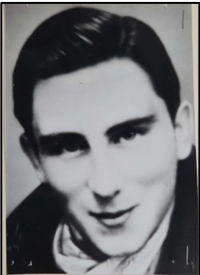
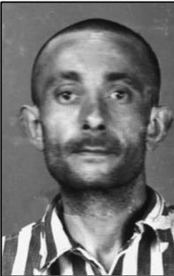

Les noms de rue, de quartier, de square
BLANC, Rose
Née le 24 septembre 1919 à Elne (Pyrénées-Orientales), morte en déportation le 15 mars 1943 à Auschwitz. Originaire des Pyrénées-Orientales, Rose Blanc quitte l’école à l’âge de quatorze ans après avoir obtenu son Certificat d’études et part ensuite à Paris pour faire des ménages. C’est dans la capitale qu’elle noue ses premiers contacts avec des militants communistes. En 1935, elle est de retour à Perpignan, où vit sa famille, et adhère aux Jeunesses communistes locales. Elle devient en 1940 agent de liaison du comité central du Parti communiste. Arrêtée et déportée à Auschwitz dans le convoi du 23 janvier 1943, elle y meurt la même année. Elle avait 17 ans.
DESCHAMPS, René
Né le 20 octobre 1902 à Poitiers (Vienne), mort en déportation le 19 septembre 1942 à Auschwitz. Résidant à Drancy au 60 rue de la Mare, il est élu conseiller municipal communiste de la ville le 5 mai 1935. Non mobilisable en septembre 1939, il signe « l’Appel aux Drancéens » à l’automne 1939 qui enjoint les élus « à continuer leur mandat dans le cadre des lois républicaines ». Cet engagement lui vaut d’être déchu de son mandat le 15 février 1940 sur ordre de la préfecture. Plus tard, après avoir été arrêté, il est déporté à Auschwitz, où il meurt le 19 septembre 1942.
GIBRAT, Roger
Né le 24 mai 1923 à Paris, tué le 21 août 1944 à Paris dans le VIe arrondissement. Il est le fils de Benjamin Gibrat, « Juste, parmi la Nation ». Inspecteur de police auxiliaire, il travaillait au service anthropométrique de la préfecture de police de Paris. Le 21 août 1944, présent avec son collègue Pierre Ganne aux abords de la station de métro Saint-Michel, il est mortellement blessé lors d’une fusillade entre des soldats allemands et les défenseurs d’une barricade. Reconnu « Mort pour la France » par le ministère des Anciens combattants, Roger Gibrat a également été homologué F.F.I. Une plaque à son nom été posée à l’Hôtel de Ville de Drancy.
JUSTICE, Raymond
Né le 4 juin 1920 à Pantin (Seine-Saint-Denis), fusillé le 26 août 1941 au Mont-Valérien, commune de Suresnes (Hauts-de-Seine). Résidant à Drancy au 6 rue Louise-Michel, il adhère aux Jeunesses communistes en 1936 et devient un militant actif. Il était employé comme docker par la Chambre de commerce de Pantin et travaillait aux entrepôts. Le mercredi 13 août 1941, il est arrêté par des policiers à proximité du métro Havre-Caumartin : les Jeunesses communistes de la région Paris-Est y organisaient une manifestation contre la présence des troupes allemandes. Il est interrogé, livré aux autorités allemandes et incarcéré à la prison du Cherche-Midi à Paris. Il est condamné à mort pour intelligence avec l’ennemi le 23 août 1941 et fusillé trois jours plus tard au Mont-Valérien. Après la Libération, son père Léon déposa plainte le 7 avril 1945 contre les inspecteurs qui arrêtèrent son fils. La mention « Mort pour la France » fut attribuée à Raymond Justice le 18 février 1946, et son nom fut gravé sur une plaque commémorative à l’entrée de l’Hôtel de Ville de Drancy.
LAPERRUQUE, Aimé
Né le 27 avril 1899 près d’Albi (Tarn), mort le 21 août 1944 à Bobigny (Seine-Saint-Denis). Résidant à Drancy, rue de Maubeuge, il prend part aux combats pour la libération de Bobigny. Grièvement blessé le 20 août 1944, il est transporté à l’hôtel franco-musulman de Bobigny (aujourd’hui l’hôpital Avicenne), où il meurt le lendemain. Il est inhumé dans le carré militaire du cimetière communal de Drancy. Reconnu « Mort pour la France » par le ministère des Anciens combattants en 1946, Aimé Laperruque a également été homologué F.F.I. Son nom apparaît sur la plaque dédiée aux F.F.I.-F.T.P., posée à l’entrée de l’Hôtel de Ville de Drancy.
MEDRANO, Pierre
Résistant ayant vécu à Drancy (rue Jules Vallès), arrêté en janvier 1941 dans cette ville et décédé en mars 1943 à Oranienbourg (Allemagne).
NIMAL, Alfred
Né le 29 mars 1922 à Drancy (Seine-Saint-Denis), tué le 20 août 1944 à Bobigny (Seine-Saint-Denis). Membre du Front national de lutte pour la liberté et l’indépendance, il participe aux combats pour la libération de Bobigny. Le 20 août 1944, il est touché mortellement par un tir allemand. Il est inhumé dans le carré militaire du cimetière communal de Drancy. Reconnu « Mort pour la France » par le ministère des Anciens combattants en 1950, Alfred Nimal a également été homologué F.F.I. Son nom apparaît sur la plaque dédiée aux F.F.I.-F.T.P., posée à l’entrée de l’Hôtel de Ville de Drancy.
PETIEU, Roger
 Né le 11 août 1926 à Noisy-le-Sec (Seine-Saint-Denis), tué au combat le 18 août 1944 à Bondy (Seine-Saint-Denis). Résidant à Bondy et membre des corps francs des Francs-Tireurs et Partisans Français (F.T.P.F.), il participe le 18 août 1944 à une attaque menée contre des détachements de l’armée allemande lors de la retraite de celle-ci, sur la route nationale n°3. Lors de cette attaque, Roger Petieu trouve la mort. Il est ensuite inhumé dans le carré militaire du cimetière communal de Drancy. Son nom est visible sur la plaque dédiée aux F.F.I.-F.T.P., posée à l’entrée de l’Hôtel de Ville de Drancy. Reconnu « Mort pour la France » par le ministère des Anciens combattants, Roger Petieu a également été homologué F.T.P.F.
QUATREMAIRE, Jacqueline
Née le 18 octobre 1918 près de Mortagne-au-Perche (Orne), morte le 15 juin 1943 à Auschwitz. Installée avec ses parents en région parisienne en 1934 – son père fut élu maire communiste de Noisy-le-Sec en 1936 –, elle rejoint le Parti communiste en 1937. Pendant l’Occupation, elle rejoint la Résistance et devient agent de liaison chargé de l’organisation et de la diffusion de la propagande clandestine. Elle est arrêtée avec une soixantaine d’autres résistants le 16 juin 1942 par la police au terme d’une filature de plusieurs mois. Détenue après son interrogatoire au fort de Romainville, elle est déportée le 24 janvier 1943 depuis Compiègne dans un convoi de 230 femmes à destination d’Auschwitz, matricule numéro 31641. Affectée à l’infirmerie, elle meurt le 15 juin 1943 après avoir contracté la phtisie. Germaine Quatremaire, mère de Jacqueline, dépose plainte le 3 octobre 1945 devant la commission d’épuration de la police, en déclarant notamment que sa fille « a été arrêtée le 17 juin 1942 pour activité politique clandestine par plusieurs inspecteurs ». Jacqueline Quatremaire a été homologuée au titre de la Résistance intérieure française (RIF), et Déportée internée résistante (DIR).
SIGONNEY, André
Né le 1er juin 1920 à Paris dans le XIVe arrondissement, fusillé le 26 août 1941 au Mont-Valérien, commune de Suresnes (Seine, Hauts-de-Seine). Résidant à Drancy avec sa famille, il adhère aux Jeunesses communistes en 1938 mais n’y exerce pas de responsabilités. Le 13 août 1941, il est arrêté pour avoir participé à une manifestation organisée par les Jeunesses communistes de la région Paris-Est à proximité du métro Havre-Caumartin. D’abord incarcéré à la prison du Cherche-Midi à Paris, il est ensuite transféré à la prison de Fresnes. Le 23 août, il est condamné à mort pour intelligence avec l’ennemi et fusillé trois jours plus tard : un tract a été trouvé à son domicile lors d’une perquisition. Inhumé au cimetière parisien d’Ivry-sur-Seine le 26 août, son corps est ensuite transféré à Drancy le 18 février 1945. Moins d’un mois plus tard, le 20 mars, sa mère déposa plainte et déclara que lors des interrogatoires des inspecteurs frappèrent son fils. Reconnu « Mort pour la France » par le ministère des Anciens combattants le 16 novembre 1945, André Sigonney a également été homologué au titre de la Résistance intérieure française (RIF), et Interné résistant. Une plaque à son nom été posée à l’Hôtel de Ville de Drancy.
WIRBEL, Jean
Né le 10 février 1886 près de Thionville (Moselle), exécuté le 19 août 1944 au lieu-dit La Patte d’Oie à Gonesse (Val-d’Oise). Résidant à Drancy au 31 rue Danton et membre de la résistance, il est arrêté le 18 août 1944 par les Allemands et exécuté le lendemain. Son corps est inhumé au carré militaire du cimetière communal de Drancy et son nom est inscrit sur la plaque dédiée aux F.F.I.-F.T.P., posée à l’entrée de l’Hôtel de Ville de Drancy. Il a également été homologué au titre de la Résistance Intérieure Française (R.I.F.)
BRONZSTEIN, Simon
Né le 23 janvier 1918 à Ciechanów (Pologne), fusillé le 23 avril 1942 à Nantes, terrain militaire du Bêle (Loire-Atlantique). Avant la guerre, il exerçait la profession de vendeur en bonneterie et militait au sein des Jeunesses communistes de Drancy. Fils d’immigrés juifs polonais arrivés en France en mai 1931, il est naturalisé français en janvier 1939 et participe aux combats de mai-juin 1940. Démobilisé le 17 janvier 1941, il rentre chez lui et se retrouve sans travail. Accusé de participer à une manifestation organisée par les Jeunesses communistes clandestines dans la soirée du 13 août 1941, il est arrêté par les autorités allemandes, jugé par une cour allemande et interné administrativement le 25 août. Il est transféré le 16 septembre au camp de Choisel à Châteaubriant. Après un attentat commis le 8 avril 1942 à Paris contre un soldat allemand, les auteurs n’ayant été ni identifiés ni arrêtés, Simon Bronsztein est choisi comme otage par les Allemands pour être exécuté, avec trois autres compagnons, à titre de représailles. L’exécution a eu lieu le 23 avril 1942. D’abord inhumé anonymement au cimetière de Grandchamp, il repose aujourd’hui au carré militaire du cimetière de Drancy. Quant aux autres membres de sa famille – ses parents, sa sœur et son jeune frère – ils ont été arrêtés lors de la rafle du Vélodrome d’Hiver du 16 juillet 1942. Tous sont morts à Auschwitz.
FROMENT, Adrien
Né le 4 mars 1900 à Paris dans le XVIIIe arrondissement, tué le 19 août 1944 à Drancy (Seine-Saint-Denis). Militant communiste et résistant, il est arrêté le 19 août 1944 par les Allemands et abattu rue Sadi-Carnot. Il est ensuite inhumé dans le carré militaire du cimetière de Drancy. Homologué au titre de la Résistance Intérieure Française (RIF), son nom apparaît également sur la plaque dédiée aux F.F.I.-F.T.P., posée à l’entrée de l’Hôtel de Ville de Drancy.
JAHIER, Henri
Né le 28 janvier 1895 à Paris dans le XVIIIe arrondissement, fusillé le 19 décembre 1941 au Mont-Valérien, commune de Suresnes (Hauts-de-Seine). Résidant à Drancy pendant la guerre au 16 rue Danton, il exerçait la profession de machiniste à la société des Transports en commun de la région parisienne (TCRP), au dépôt de Flandre à Pantin. Arrêté le 10 novembre 1941 par les Allemands, qui le soupçonnent de sympathies communistes, il est incarcéré à la prison de la Santé. Il comparaît le 12 décembre devant le tribunal du Gross Paris, qui le condamne à mort pour détention d’armes. Il est fusillé le 19 décembre. D’abord inhumé au cimetière parisien d’Ivry-sur-Seine, son corps est transféré le 18 avril 1945 dans le carré militaire du cimetière communal de Drancy. Il est officiellement reconnu « Mort pour la France » par l’ONAC de Caen le 20 septembre 2012.
LANGLOIS, Henri
Né le 1er février 1895 à Tupigny (Aisne), exécuté le 28 octobre 1943 à Cologne. Installé à Drancy après son mariage en 1920, Henri Langlois exerce la profession de chef de chantier. En 1935, il devient secrétaire de la section locale de la SFIO et noue des contact avec des militants trotskistes. Déporté Nacht und Nebel (NN) le 24 août 1942 vers la prison de Düsseldorf, il est ensuite transféré à Rheinbach, prison pour les peines de travaux forcés. Condamné à mort le 20 septembre 1943, il est transféré le 23 octobre à la prison de Cologne, où il est exécuté cinq jours plus tard. En 1959, la médaille de la Résistance et la Légion d’honneur lui sont attribuées à titre posthume. Il faut attendre 1993 pour qu’il soit reconnu mort en déportation, mort pour la France et enfin homologué DIR et membre des FFC.
MATHIEU, Camille
Né en 1915, mort en 2017. Gendarme à la 22e légion de Gendarmerie mobile de Paris basé à Drancy, il est affecté à la garde du camp de Drancy le 1er novembre 1940. Du 20 au 25 août 1941, 4 232 juifs sont déportés au camp de Drancy après avoir été arrêtés lors de la première rafle à Paris par les nazis. Touché par leur sort, Camille Mathieu aide dans un premier temps les femmes à communiquer avec leurs maris, les premières ayant été séparées des seconds. Le 12 novembre 1941, il parvient à faire sortir du camp huit prisonniers en les faisant passer pour malades. Plus tard, il aide d’autres Juifs à franchir la ligne de démarcation pour rejoindre la zone Sud. Renvoyé de la gendarmerie en 1943, il rejoint la Résistance et participe aux combats de la Libération. Titulaire de la médaille militaire et de la croix de guerre 39-45, il reçoit également la Légion d’honneur en 2010. En 1976, il est reconnu “Juste parmi les nations” par le Yad Vashem.
NILÈS, Maurice
Né le 12 août 1919 à Paris dans le XVe arrondissement, mort le 5 décembre 2001 à Bobigny (Seine-Saint-Denis). Responsable des Jeunesses communistes avant la guerre, Maurice Nilès était ouvrier fraiseur. Mobilisé en 1939 et fait prisonnier l’année suivante, il parvient à s’évader et rejoint la résistance sous le pseudonyme Robert. Arrêté en 1941 et interné, il s’évade une nouvelle fois en février 1944 et rejoint le maquis. Commandant FTPF dans le Sud-Ouest, il participe à la Libération de Bordeaux le 28 août 1944. Après la guerre, il poursuit une carrière politique et devient successivement conseiller général du canton de Noisy-le-Sec (1958), député du Bourget-Drancy (novembre 1958-mars 1967), député de la 4e circonscription de la Seine-Saint-Denis (mars 1967-mars 1978), secrétaire de l’Assemblée nationale (1972-1973). En 1959, il devint maire de Drancy et le reste jusqu’en 1997. Il a été homologué F.F.I. et D.I.R. (Déportés et internés de la Résistance).
PÉNA, Fernand
Né le 16 janvier 1922 à Drancy, mort en 1944. Il était membre des Éclaireurs de France avant la guerre et entre dans la Résistance dès juillet 1940. Membre des Jeunesses Communistes, il est très actif et a participé à toutes les actions jusqu'à son arrestation le 13 avril 1942 par la Brigade Spéciale à Bobigny près de son usine. Il est livré à la Gestapo, torturé et incarcéré aux tourelles avant d'être déporté le 8/05/43, à Oranienbourg puis par convoi au camp de Sachsenhausen où il meurt en décembre 1944 à 22 ans.
PUECH, Gabriel
 Né le 29 avril 1899 au Pré Saint-Gervais (Seine-Saint-Denis). Domicilié avec son épouse au 16 rue de la République à Drancy depuis 1936, il travaille comme régisseur du garage de la ville, employé par la commune, et milite au sein du Parti communiste. Mobilisé le 2 septembre 1939, il est démobilisé le 24 juillet 1940 et reprend son emploi à Drancy. Il est toutefois surveillé activement par la police française et ses opinions communistes lui valent d’être arrêté le 5 octobre 1940 et interné. Le 22 mai 1942, avec plus d’une centaine d’autres internés, il est remis aux autorités allemandes et conduit au camp allemand de Royallieu à Compiègne (Oise). Le 6 juillet 1942, après avoir rejoint un groupe d’un millier d’otages communistes et d’une cinquantaine d’otages juifs, il est déporté à Auschwitz-I, où il arrive le 8 juillet sous le numéro 46025. Interrogé par les Allemands, il meurt à une date inconnue, probablement avant le milieu de l’année 1943. Après la Libération, le Conseil municipal de Drancy donne son nom à l’ancienne rue de Saïgon. Son nom figure également sur la plaque commémorative dédiée aux déportés et apposée à l’entrée de l’Hôtel de Ville. Il est officiellement reconnu mort en déportation.
SAGE, Charles
Né le 12 août 1912 à Montreuil-sous-Bois (Seine-Saint-Denis), tué le 21 août 1944 à Bobigny (Seine-Saint-Denis), à la hauteur du 115 rue Saint-Denis. Pompier de profession et membre de la Défense passive, il figure sur le monument de la Défense passive au cimetière du Montparnasse à Paris ainsi que sur la liste des policiers morts pour la Libération de Paris, disponible au Musée de la police dans le Ve arrondissement de Paris. Son nom apparaît aussi sur deux plaques commémoratives visibles à l’Hôtel de Ville de Drancy. Il fut homologué F.F.I.
SOUBIRAN, Jean
Né le 22 août 1923 à Paris dans le XVe arrondissement, exécuté le 19 août 1944 au lieu-dit La Patte d’Oie à Gonesse (Val-d’Oise). Résidant à Drancy, où il a épousé Yvonne Gasnault le 22 juillet 1944, Jean Soubiran exerçait la profession d’auxiliaire homme d’équipe à la SNCF et militait au sein des Jeunesses communistes. Arrêté le 18 août 1944 par les Allemands alors qu’il se trouvait à la mairie de Drancy lors des combats de la Libération, il a été exécuté le lendemain. Il est actuellement inhumé au carré militaire du cimetière de Drancy. Reconnu « Mort pour la France » par le ministère des Anciens combattants, Jean Soubiran a également été homologué F.F.I. Son nom apparaît sur une stèle commémorative des agents de la SNCF en gare du Bourget, ainsi que sur une plaque visible à l’Hôtel de Ville de Drancy.